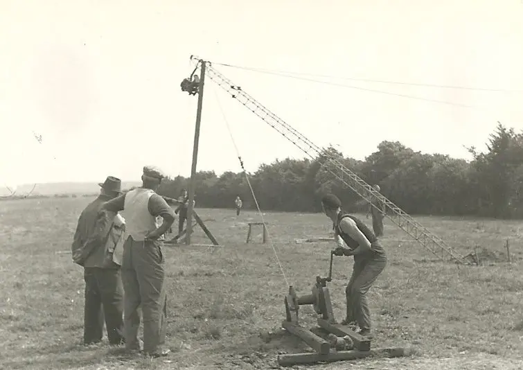
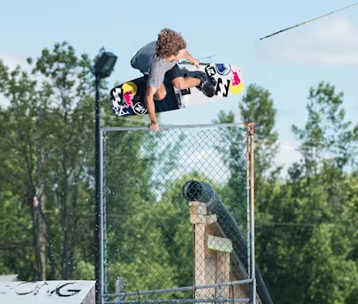
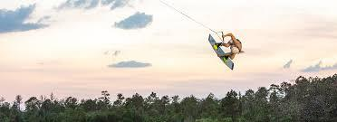
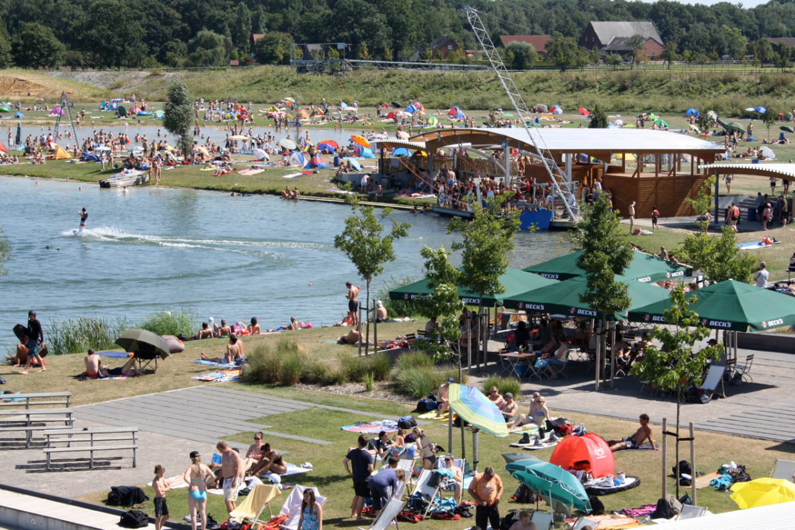

Ever wondered how cable wakeboarding started? While everyone was getting hyped about boat wakeboarding in the 80s, something amazing was brewing in Germany. Picture this: it's 1959, and Bruno Rixen just built the first cable system for water skiing. Little did he know that 30 years later, some crazy riders would strap wakeboards to their feet and change the game forever.
The early 90s were wild - imagine being one of the first people to hit a cable with a wakeboard. No tutorials, no YouTube videos, just pure trial and error. These pioneers were figuring it out as they went along, probably eating their fair share of water in the process! But they were onto something big. Cable parks meant you didn't need a fancy boat or a crew - just grab your board and go ride.
Here's where things get really interesting. The late 90s and early 2000s saw cable parks transform from basic tow systems into full-blown wake playgrounds. Someone had the brilliant idea: "Hey, what if we put some rails and kickers in there?" Taking inspiration from snowboarding, parks started adding obstacles, and riders went nuts for it!
Equipment kept getting better too. Gone were the days of snapping boards on rails - companies started making gear specifically for cable. Better pulleys, smarter towers, and smoother corners meant riders could progress faster than ever. Even the pros were shocked at what was becoming possible.
By 1999, things got serious. The first official championships kicked off, and suddenly cable wakeboarding wasn't just about having fun - it was a legit competitive sport. This was huge! Riders weren't just weekend warriors anymore; they were athletes pushing the boundaries of what was possible on the water.
Fast forward to today, and cable wakeboarding is absolutely booming! Modern parks are like water sports paradise - full-size cables running multiple riders, beginner-friendly 2.0 systems for learning, and obstacle setups that'll make your jaw drop. It's mind-blowing how far we've come from those early days.
The competition scene? It's on fire! We're talking World Championships with riders throwing down tricks that seemed impossible a few years ago. The sport's so legit now that it made it to the World Games in 2017, and there's talk about the Olympics. How cool is that?
But here's what really makes cable wakeboarding special today - it's for everyone. Whether you're a total beginner learning your first start or a pro rider working on your latest trick, there's a place for you. Parks are like little communities now, where riders hang out, push each other, and share the stoke.
And get this - cable parks are actually helping save the planet! Instead of burning fuel in boats all day, these systems run on electricity. Many parks are even going solar and finding ways to protect their local environment. It's like the future of water sports is already here!
Looking at where cable wakeboarding is today, it's crazy to think it all started with some brave souls strapping boards to their feet at an old ski cable. The sport's grown up, but it hasn't lost that spark that made it special in the first place - the pure joy of riding, the rush of landing a new trick, and the friends you make along the way.